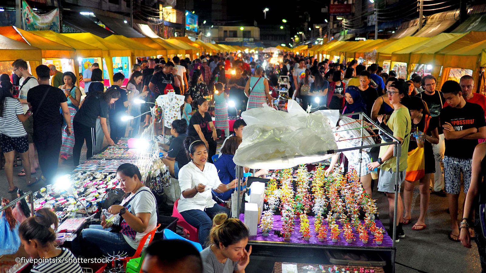

Krabi
Pourquoi partir à Krabi
Ville du Sud de la Thaïlande, Krabi se situe sur la côte ouest, sur la mer d'Andaman. Elle compte environ 25 000 habitants et c'est une belle destination touristique, avec ses magnifiques plages de sable blanc et ses eaux transparentes.
On peut aussi y pratiquer l'escalade sur ses falaises de calcaire, et de nombreux sites de plongée se trouvent à proximité. Autres activités à pratiquer : l'observation des oiseaux, le kayak, la voile, la pêche, la découverte des grottes, la randonnée. Vous pourrez également visiter plusieurs lieux dignes d'intérêt : le temple de Wat Kaew, assez récent mais remarquable ; les deux roches Khao Kanab Nam, symboles de la ville ; le Musée d'Art contemporain ; le Wat Tham Sua, ou temple du Tigre, l'un des plus renommés dans la région, avec son escalier de 1237 marches qui mène au sommet de la montagne où il se tient.
Que faire ?
Escalade à Railay beach
Si vous faites un peu d’escalade, vous avez probablement déjà entendu parler de Railay Beach. C’est un endroit très réputé pour l’escalade à cause des falaises calcaires qui entourent la plage, les mêmes que celles pour lesquelles Krabi est si célèbre. Si vous n’êtes pas amateur d’escalade mais que vous ne savez pas quoi faire à Krabi, Railay Beach est un très bel endroit à visiter. Située sur une petite péninsule entre Krabi et Ao Nang, Railay Beach n’est accessible qu’en bateau. Mais il y a quand même des endroits pour dormir ou pour acheter de la nourriture et des boissons, donc ce n’est pas une plage aussi calme que ce que vous ne pourriez penser. Et pourtant, c’est un endroit reconnu pour passer un peu de temps pour se détendre et, si vous voulez quelque chose d’un peu plus sportif, vous pouvez marcher jusqu’au point de vue de Railay Beach avec une montée relativement intense. Le chemin est bien balisé mais vous aurez besoin d’emporter de l’eau et de porter des chaussures confortables pour pouvoir faire l’ascension correctement et en toute sécurité.
Emerald Pool
Connue sous le nom de Sa Morakot en thaï et Crystal Pool en anglais, Emerald Pool est une jolie piscine naturelle remplie d’eau de source pure. Située dans la réserve naturelle de Khao Phra Bang Khram, cette grande piscine naturelle vaut le coup pour deux choses : une occasion de photo incroyable et un endroit où vous pouvez nager ! Profitez d’une randonnée sur les sentiers sinueux à travers la forêt de Khao Nor Chu Chi pour y arriver. Le chemin n’est pas particulièrement long mais, avec la chaleur de la journée, la randonnée peut être assez difficile si vous n’êtes pas trop en forme. Elle fait moins d’un kilomètre et vous pouvez profiter de la vue et des sons de la jungle en y allant. Quand la jungle s’ouvre sur Emerald Pool, vous allez avoir une vue incroyable : une grande piscine naturelle qui semble presque irréelle tellement sa couleur est éclatante. Il y a des frais d’entrée à payer pour accéder au site, nager dans la piscine compris, mais c’est un prix très raisonnable. Ça devient plus intéressant si vous y passez au moins une demi-journée à explorer les autres sentiers, les nombreuses mini-piscines et les cours d’eau à côté. Il y a des vestiaires et des toilettes sur le parking près d’Emerald Pool.
Phra Nang Beach
Bien que la ville de Krabi soit la principale ville de la région, Ao Nang est un autre endroit populaire où vont les touristes. La ville en elle-même est beaucoup plus petite, mais beaucoup de visiteurs viennent ici pour Phra Nang Beach. Si vous cherchez une de ces petites plages isolées avec quasiment personne, vous vous êtes trompé ! Comme elle est très accessible, il est aisé d’aller à Phra Nang Beach mais ça veut aussi dire que beaucoup de monde y va. Pourtant, même remplie de monde, son paysage incroyable rend cette plage vraiment différente des autres, ce qui en fait l’une des choses à faire à Krabi. Il y a plusieurs grottes à explorer, creusées dans les roches environnantes. Si vous êtes un grimpeur expérimenté, c’est un endroit extraordinaire pour mettre vos talents à l’épreuve. La plage est recouverte de sable blanc et ses eaux sont limpides. C’est un endroit idéal pour nager et pour faire du snorkeling. Bien qu’il y ait pas mal de monde sur la plage, c’est rarement aussi bondé que sur certaines autres plages de Thaïlande et, si vous visitez plus tôt ou plus tard dans la journée, c’est beaucoup plus calme.
Les spécialités
Night Market
Se promener le long des marchés nocturnes de Krabi est l'une des expériences les plus authentiques que vous puissiez vivre en Thaïlande. Ce sont les meilleurs endroits pour faire du shopping dans la rue, trouver des souvenirs sympas à rapporter à la maison, déguster de délicieux plats locaux et se mêler aux habitants. Même si vous n'êtes pas intéressé par le shopping, les images, les sons et l'arôme omniprésent de la délicieuse cuisine thaïlandaise vous attireront à coup sûr. Comme dans la plupart de la Thaïlande, Krabi a des marchés nocturnes le week-end et en semaine. Alors que les marchés nocturnes du week-end se déroulent généralement du vendredi au dimanche, ceux en semaine sont ouverts tous les jours. Donc, si vous vous rendez à Krabi, assurez-vous d'inclure au moins l'un d'entre eux dans votre itinéraire.
Dessert

Le dessert principal ce sont les fruits exotiques, et il est à souligner que la population locale n’aime pas beaucoup les pâtisseries et les desserts. Mais si on en a envie on aura quand même la possibilité de goûter quelques desserts traditionnels assez intéressants. Il est très populaire la meringue sucrée «foy thong», qu’on peut commander dans les cafés ou bien acheter au marché. À la base du riz et des fruits on prépare aussi des puddings diverses, partout on peut manger des gâteaux sucrés garnis des fruits les plus variés. Sur l’île on peut aussi trouver des endroits vraiment fashion, qui pourront vraiment impressionner par le plus riche choix de spécialités exotiques, aussi bien que des cafés sympas situés en plein air, qui seront sûrement très appréciés par les touristes économes.
Les conseils de Martin
Harum trium sententiarum nulli prorsus assentior. Nec enim illa prima vera est, ut, quem ad modum in se quisque sit, sic in amicum sit animatus. Quam multa enim, quae nostra causa numquam faceremus, facimus causa amicorum! precari ab indigno, supplicare, tum acerbius in aliquem invehi insectarique vehementius, quae in nostris rebus non satis honeste, in amicorum fiunt honestissime; multaeque res sunt in quibus de suis commodis viri boni multa detrahunt detrahique patiuntur, ut iis amici potius quam ipsi fruantur.
Quand partir
| Janvier | |
| Février | |
| Mars | |
| Avril | |
| Mai | |
| Juin | |
| Juillet | |
| Août | |
| Septembre | |
| Octobre | |
| Novembre | |
| Décembre |
Légende
| Go go go | Comme tu veux | Reste chez toi |
Les indiepensables
- Anti-moustique
- Tongs
- Maillot de bain